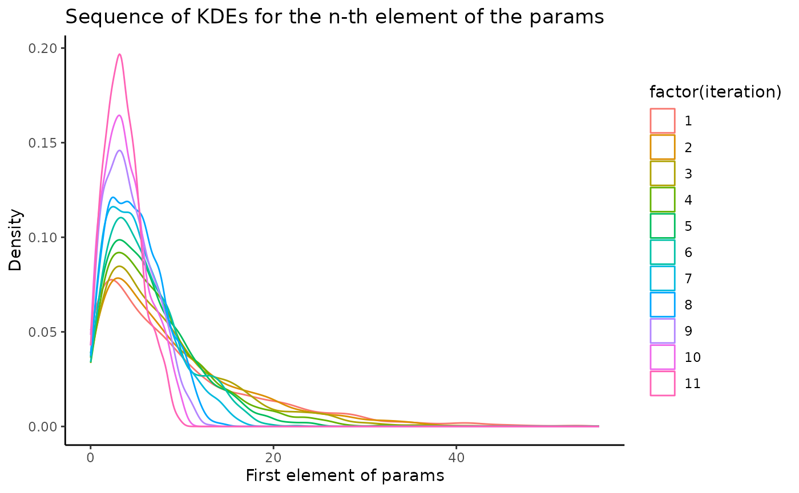
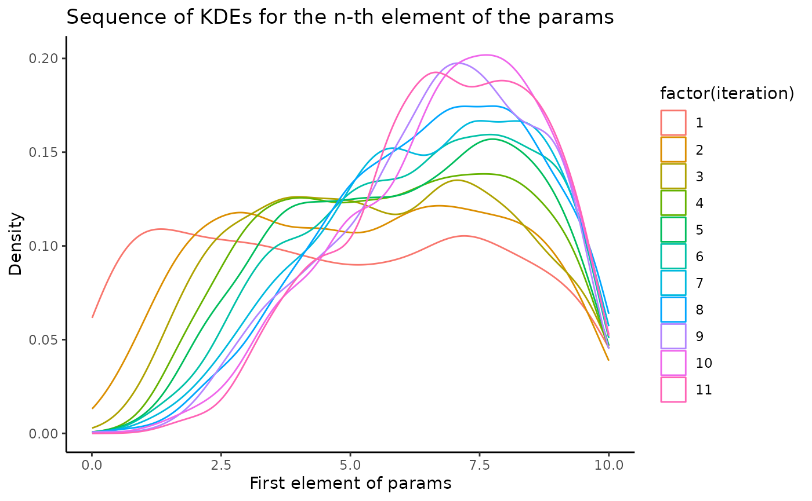

Poisson-Exponential Sums
poisson-exponential.Rmd
poiss_exp_sums <- function(params, n, d) {
#' Generates a matrix of i.i.d. random sums
#'
#' @param params List of distributional arguments for the sum and summand distributions
#' @param n Number of samples to generate
#' @param d Number of random sums per sample
#' @return Matrix of shape n by d of i.i.d. random sums
sum_distribution_arg <- params[[1]]
summand_distribution_arg <- params[[2]]
# Create sampling functions
sum_sampling_fun <- rpois
summand_sampling_fun <- rexp
# Initialize empty matrix to store samples
samples <- matrix(numeric(n * d), n, d)
# Iterate over number of samples
for (i in 1:n) {
for (j in 1:d) {
num_summands <- sum_sampling_fun(1, sum_distribution_arg)
samples[i, j] <- sum(summand_sampling_fun(num_summands, summand_distribution_arg))
}
}
return(samples)
}
poiss_exp_sums(as.numeric(c(10, 20)), 3, 2)
#> [,1] [,2]
#> [1,] 0.2089607 0.4266547
#> [2,] 0.5642967 0.7516369
#> [3,] 0.6512547 0.3624784
set.seed(1234)
true_theta <- c(2, 8)
d <- 100
obs_data <- poiss_exp_sums(true_theta, 1, d)
obs_data
#> [,1] [,2] [,3] [,4] [,5] [,6] [,7]
#> [1,] 0 0.05816354 0.8481112 0.1283374 0.09505379 0.1995132 0.3815573
#> [,8] [,9] [,10] [,11] [,12] [,13] [,14]
#> [1,] 0.07764964 0.1135858 0.2943007 0.09104831 0.4013118 0.1373096 0.05431794
#> [,15] [,16] [,17] [,18] [,19] [,20] [,21]
#> [1,] 0.2022691 0.2857367 0.6598878 0.4443025 0 0.9612644 0.04212385
#> [,22] [,23] [,24] [,25] [,26] [,27] [,28] [,29]
#> [1,] 0.5787119 0.5744852 0.4600459 0 0.3542554 0 0.2033488 0
#> [,30] [,31] [,32] [,33] [,34] [,35] [,36]
#> [1,] 0.4294696 0 0.727209 0.1319076 0.06496694 0.1673964 0.1720064
#> [,37] [,38] [,39] [,40] [,41] [,42] [,43]
#> [1,] 0.3355447 0.3519872 0.2172263 0.1896894 0.3014068 0.02517854 0
#> [,44] [,45] [,46] [,47] [,48] [,49] [,50]
#> [1,] 0.7817427 0.09157652 0.2243522 0.1801289 0.2526892 0.4883004 0.09343664
#> [,51] [,52] [,53] [,54] [,55] [,56] [,57]
#> [1,] 0.1818365 0.2057539 0.1728001 0.3077245 0.04727938 0.4016472 0
#> [,58] [,59] [,60] [,61] [,62] [,63] [,64] [,65]
#> [1,] 0.8710376 0.09117147 0 0.3645089 0 0 0.3546233 0.5956559
#> [,66] [,67] [,68] [,69] [,70] [,71] [,72]
#> [1,] 0.2289477 0.1546017 0.2937754 0.1894596 0.4732647 0.4675294 0.3598091
#> [,73] [,74] [,75] [,76] [,77] [,78] [,79]
#> [1,] 0.2404961 0.2193898 0.01327843 0.1452336 0.2741278 0.6632095 0.150785
#> [,80] [,81] [,82] [,83] [,84] [,85] [,86] [,87]
#> [1,] 0.2732368 0.8991531 0.5727444 0.5482978 0.2542733 0 0 0.276676
#> [,88] [,89] [,90] [,91] [,92] [,93] [,94] [,95]
#> [1,] 0.8769754 0.04656057 0.1332053 0.3015519 0 0.2387277 0.0906981 0
#> [,96] [,97] [,98] [,99] [,100]
#> [1,] 0.04963051 0.7644648 0.3017737 0.2035379 0.6023359
priors <- list(
list(name = "exp", args = list(rate = 0.1)),
list(name = "unif", args = list(min = 0, max = 10))
)
library(approxbayescomp)
n_particles <- 1000
dist <- euclidean_distance
result <- smc(n_particles, priors, poiss_exp_sums, obs_data, dist, epsilon = epsilon, n_iter = 10)
library(ggplot2)
result_matrices <- lapply(result, function(pop) {
do.call(rbind, lapply(pop, function(p) p$params))
})
for (col in 1:2) {
print(col)
result_matrices_column <- lapply(result_matrices, function(matrix) matrix[, col])
# create a data frame with one column for the iteration number and one column for the first element of the params
df <- data.frame(
iteration = rep(1:length(result_matrices_column), sapply(result_matrices_column, length)),
params = unlist(result_matrices_column)
)
# plot the KDEs
print(ggplot(df, aes(params, color = factor(iteration))) +
geom_density(alpha = 0.5) +
scale_fill_gradient(low = "blue", high = "red") +
xlab("First element of params") +
ylab("Density") +
ggtitle("Sequence of KDEs for the n-th element of the params") +
theme_classic())
}
#> [1] 1
#> [1] 2